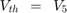

Contents
ELEN 050L (Electric Circuits I): Project 1, Evan Eberhardt, Ryan Meyer
- Problem 1: Find a Thevenin equivalent with respect to . Use this result to determine conditions under which absorbs maximal power.
- Problem 2: Create an m-file in MATLAB that will compute powers , and the efficiency coefficient for different values of . Plot and on one graph and on another using a logarithmic scale for . NOTE: Your plot for should be consistent with the results obtained in Problem 1.
- Problem 3: Based on the plots obtained in Problem 2, select so that is maximized with the following additional constraint:

- Problem 4: Assemble the circuit in Figure 1 and measure , and over an appropriate range of values for . Plot the measured values in MATLAB and compare with your simulation results. Have the requirements for , and been satisfied with the choice of obtained in Problem 3? NOTE: Think about how you are going to measure the generated power before you come to lab!
Hard Copy Deliverables:
- A MATLAB script and publish the solution using MATLAB's publish feature.
- Turn in MATLAB scripts and a document of the run-time results.
- Turn in the Excel file with the measured results.
Hints:
- Make sure that the choices for resistors satisfy the following relationship .
- Make sure that the choices for resistors satisfy the following relationship .
- Generate 5 KCL equations, 1 at each point of the square and 1 in the middle of the square.
- Use the 5 KCL equations as a starting point to simply the calculations required for computing and .
Initialize MATLAB Environment
clear; clc; clf; cla; close all; format short; format compact;
Setup global variables
% These element values are fixed in the circuit. VG = 12; % Generator voltage R1 = 510; % Ohms R2 = 680; % Ohms R3 = 680; % Ohms R4 = 680; % Ohms R5 = 1000; % Ohms R6 = 1000; % Ohms R7 = 1000; % Ohms R8 = 1200; % Ohms R10 = 1200; % Ohms % Build an array for R1 through R8, and R10 (use if calling the function). % Note that the index for R9 is set to 0 Ohms, but this is just a place % holder in the array to make the code readable inside the external % function (if it is used). RN = [R1, R2, R3, R4, R5, R6, R7, R8, 0, R10]; % Ohms % This element value is the R9 variable in the circuit. R9 = [1:10:10^5]; % Ohms % These values establish the constraints for the P9/P10 ratio. P9_div_P10_ratio_min = 0.7; P9_div_P10_ratio_max = 1.3; % These values are used for plotting purposes. fignum = 5; symbolic_mode = true;
Problem 1
Find a Thevenin equivalent with respect to as illustrated in Figure 2, where ,  and .
and .

The computations for  are based upon Figure 3.

A = [ (1) (0) (0) (0) (0); ... (-1/R3) (1/R3 + 1/R4 + 1/R5 + 1/R10) (-1/R4) (0) (-1/R5); ... (-1/R2) (-1/R4) (1/R2 + 1/R4 + 1/R6 + 1/R7) (-1/R6) (-1/R7); ... (-1/R1) (0) (-1/R6) (1/R1 + 1/R6 + 1/R8) (-1/R8); ... (0) (-1/R5) (-1/R7) (-1/R8) (1/R5 + 1/R7 + 1/R8)]; b = [VG; 0; 0; 0; 0]; V = A\b; Vth = V(5); fprintf('\nThe Thevenin voltage is Vth = %-6.4f Volts.\n',Vth);
The Thevenin voltage is Vth = 10.3011 Volts.
The computations for are based upon Figure 4.

A = [ (1/R3 + 1/R4 + 1/R5 + 1/R10) (-1/R4) (0) (-1/R5); ... (-1/R4) (1/R2 + 1/R4 + 1/R6 + 1/R7) (-1/R6) (-1/R7); ... (0) (-1/R6) (1/R1 + 1/R6 + 1/R8) (-1/R8); ... (-1/R5) (-1/R7) (-1/R8) (1/R5 + 1/R7 + 1/R8)]; b = [0; 0; 0; 1]; V = A\b; Rth = V(4)/1; fprintf('\nThe Thevenin resistance is Rth = %-6.4f Ohms.\n',Rth);
The Thevenin resistance is Rth = 529.5334 Ohms.
Problem 2
Compute powers , and the efficiency coefficient for different values of .
The computations are based upon Figure 5.

G1 = [ 1, 0, 0, 0, 0; ... (-1/R3), ((1/R3)+(1/R4)+(1/R5)+(1/R10)), (-1/R4), 0, (-1/R5); ... (-1/R2), (-1/R4), ((1/R2)+(1/R6)+(1/R7)+(1/R4)), (-1/R6), (-1/R7); ... (-1/R1), 0, (-1/R6), ((1/R1)+(1/R6)+(1/R8)), (-1/R8); ... 0, (-1/R5), (-1/R7), (-1/R8), ((1/R8)+(1/R7)+(1/R5)) ... ]; G2 = [ 0, 0, 0, 0, 0; ... 0, 0, 0, 0, 0; ... 0, 0, 0, 0, 0; ... 0, 0, 0, 0, 0; ... 0, 0, 0, 0, 1 ... ]; b = [ VG; 0; 0; 0; 0];
The following block of code is an external function that has been inserted here for documentation purposes in the final solution.
% Beginning of proj1E50 function (inserted here for MATLAB publish) P9 = []; P10 = []; eta = []; PG = []; for iter = 1:length(R9) % We have to solve the circuit once for each different value of R9. % Since all these different values are stored in a vector R9, % length(R9) determines how many times we must execute the loop. R9_iter = R9(iter); % R9_iter takes the next value from vector R9. A = G1 + (1/R9_iter)*G2; V = A\b; % V contains the solution of the node voltage equations. PR9 = (V(5)^2)/R9_iter; PR10 = (V(2)^2)/R10; IR1 = (V(1)-V(4))/R1; IR2 = (V(1)-V(3))/R2; IR3 = (V(1)-V(2))/R3; IG = IR1 + IR2 + IR3; PG_iter = VG * IG; PG = [PG, PG_iter]; % Computation of the powers associated with R9, R10 and the generator. P9 = [P9, PR9]; P10 = [P10, PR10]; % Powers PR9 and PR10 computed for different values of R9 are stored % in vectors P9 and P10. W = (PR9 + PR10) / PG_iter; eta = [eta, W]; % Eta represents the percentage of the generated power that is absorbed % by resistors R9 and R10. end; % End of proj1E50 function (inserted here for MATLAB publish)
Generate the plot for and indicate where occurs. The location should match the calculation for .
% Initialize for plot plot_left_r9 = min(R9); plot_right_r9 = max(R9); PG_plot_min = 0; PG_plot_max = max(PG); P9_min = 0; P9_max = max(P9); P10_min = 0; P10_max = max(P10); eta_plot_min = 0; eta_plot_max = max(eta); fignum = fignum+1; figObj = figure(fignum); % Establish a figure number set(fignum, 'Name',['P9(R9) at Rth']); % Name the figure P9_Rth_Plot = semilogx(R9,P9); % Generate plot grid on; % Turn grid on xlabel('Resistance: R_9 (\Omega)'); % Label the axis ylabel('Power: P_9 (Watts)'); % Label the axis axis([plot_left_r9, plot_right_r9,... P9_min, ... P9_max+0.01]); % Bound plot title(['Figure ',num2str(fignum,'%-2.u'),... ': P_9(R_9) with max at R_t_h']); legend('P_9(R_9)', 'Location', 'Best'); % Find the R9 values that satisfy max(P9) cursor1 = 1; cursor2 = 1; cursor1_found = false; cursor2_found = false; R9_best = -1.0; for iter = 1:length(R9) % Locate the left min constraint if (~(cursor1_found) && ... P9(iter) >= P9_max && ... P9(iter) <= P9_max) cursor1 = iter; R9_left_min = R9(iter); cursor1_found = true; break; end; end; for iter = cursor1+1:length(R9) % Locate the left max constraint if (~(cursor2_found) && ... (P9(iter) < P9(iter-1) || ... P9(iter) > P9_max)) if (P9(iter-1) <= P9_max) cursor2 = iter-1; R9_left_max = R9(iter-1); else cursor2 = iter; R9_left_max = R9(iter); end; cursor2_found = true; break; end; end; makedatatip(P9_Rth_Plot, [cursor1; cursor2]);
fprintf(... '\nFrom Figure %-2.u the maximum P9 occurs at R9 = %-6.4f Ohms.\n',... fignum, R9(floor(mean(cursor1,cursor2)))); fprintf('\nFrom Figure %-2.u the maximum P9 is = %-6.4f Watts.\n',... fignum, P9(floor(mean(cursor1,cursor2))));
From Figure 6 the maximum P9 occurs at R9 = 531.0000 Ohms. From Figure 6 the maximum P9 is = 0.0501 Watts.
Generate the plots for , , and .
fignum = fignum+1; figObj = figure(fignum); % Establish a figure number set(fignum, 'Name',['PG(R9)']); % Name the figure PG_Plot = semilogx( R9, PG); % Generate plot grid on; % Turn grid on xlabel('Resistance: R_9 (\Omega)'); % Label the axis ylabel('Power: P_G (Watts)'); % Label the axis axis([plot_left_r9, plot_right_r9,... PG_plot_min, ... PG_plot_max+0.01]); % Bound plot title(['Figure ',num2str(fignum,'%-2.u'),... ': P_G(R_9)']); legend('P_G(R_9)', 'Location', 'Best'); fignum = fignum+1; figObj = figure(fignum); % Establish a figure number set(fignum, 'Name',['P9(R9) and P10(R9)']); % Name the figure P9_P10_Plot = semilogx( R9, P9, R9, P10); % Generate plot grid on; % Turn grid on xlabel('Resistance: R_9 (\Omega)'); % Label the axis ylabel('Power: P_9 and P_1_0 (Watts)'); % Label the axis axis([plot_left_r9, plot_right_r9,... min(P9_min,P10_min), ... max(P9_max,P10_max)+0.01]); % Bound plot title(['Figure ',num2str(fignum,'%-2.u'),... ': P_9(R_9) and P_1_0(R_9)']); legend('P_9(R_9)', 'P_1_0(R_9)', 'Location', 'Best'); fignum = fignum+1; figObj = figure(fignum); % Establish a figure number set(fignum, 'Name',['Coefficient eta']); % Name the figure eta_Plot = semilogx( R9, eta); % Generate plot grid on; % Turn grid on xlabel('Resistance: R_9 (\Omega)'); % Label the axis ylabel('Coefficient: \eta'); % Label the axis axis([plot_left_r9, plot_right_r9,... eta_plot_min, eta_plot_max+0.1]); % Bound plot title(['Figure ',num2str(fignum,'%-2.u'),': \eta(R_9)']); legend('\eta', 'Location', 'Best');
Problem 3
Select so that is maximized with the following additional constraint: .
P9_div_P10 = P9 ./ P10; P9_div_P10_min = 0; P9_div_P10_max = max(P9_div_P10); fignum = fignum+1; figObj = figure(fignum); % Establish a figure number set(fignum, 'Name',['P9/P10']); % Name the figure P9_div_P10_Plot = semilogx( R9,P9_div_P10); % Generate plot grid on; % Turn grid on xlabel('Resistance: R_9 (\Omega)'); % Label the axis ylabel('Ratio: P_9/P_1_0'); % Label the axis axis([plot_left_r9, plot_right_r9,... P9_div_P10_min, P9_div_P10_max+0.2]); % Bound plot title(['Figure ',num2str(fignum,'%-2.u'),': P_9/P_1_0 versus R_9']); legend('P_9/P_1_0', 'Location', 'Best'); % Find the R9 values that satisfy the P9/P10 ratio constraints cursor1 = 1; cursor2 = 1; cursor3 = 1; cursor4 = 1; cursor1_found = false; cursor2_found = false; cursor3_found = false; cursor4_found = false; R9_best = -1.0; eta_max = -1.0; locator = -1; for iter = 1:length(R9) % Locate the left min constraint if (~(cursor1_found) && ... P9_div_P10(iter) >= P9_div_P10_ratio_min && ... P9_div_P10(iter) <= P9_div_P10_ratio_max) cursor1 = iter; R9_left_min = R9(iter); eta_left_min = eta(iter); % Calculate the best choice for R9 if (eta_left_min > eta_max) eta_max = eta_left_min; R9_best = R9_left_min; locator = cursor1; end; cursor1_found = true; break; end; end; for iter = cursor1+1:length(R9) % Locate the left max constraint if (~(cursor2_found) && ... (P9_div_P10(iter) < P9_div_P10(iter-1) || ... P9_div_P10(iter) > P9_div_P10_ratio_max)) if (P9_div_P10(iter-1) <= P9_div_P10_ratio_max) cursor2 = iter-1; R9_left_max = R9(iter-1); eta_left_max = eta(iter-1); else cursor2 = iter; R9_left_max = R9(iter); eta_left_max = eta(iter); end; % Calculate the best choice for R9 if (eta_left_max > eta_max) eta_max = eta_left_max; R9_best = R9_left_max; locator = cursor2; end; cursor2_found = true; break; end; end; for iter = cursor2+1:length(R9) % Locate the right max constraint if (~(cursor3_found) && ... P9_div_P10(iter) >= P9_div_P10_ratio_min && ... P9_div_P10(iter) <= P9_div_P10_ratio_max) if (P9_div_P10(iter-1) <= P9_div_P10_ratio_max) cursor3 = iter-1; R9_right_max = R9(iter-1); eta_right_max = eta(iter-1); else cursor3 = iter; R9_right_max = R9(iter); eta_right_max = eta(iter); end; % Calculate the best choice for R9 if (eta_right_max > eta_max) eta_max = eta_right_max; R9_best = R9_right_max; locator = cursor3; end; cursor3_found = true; break; end; end; for iter = cursor3+1:length(R9) % Locate the right min constraint if (~(cursor4_found) && ... P9_div_P10(iter) < P9_div_P10_ratio_min) if (P9_div_P10(iter-1) >= P9_div_P10_ratio_min) cursor4 = iter-1; R9_right_min = R9(iter-1); eta_right_min = eta(iter-1); else cursor4 = iter; R9_right_min = R9(iter); eta_right_min = eta(iter); end; % Calculate the best choice for R9 if (eta_right_min > eta_max) eta_max = eta_right_min; R9_best = R9_right_min; locator = cursor4; end; cursor3_found = true; break; end; end; fignum = fignum+1; figObj = figure(fignum); % Establish a figure number set(fignum, 'Name',['Coefficient eta']); % Name the figure eta_Plot2 = semilogx( R9, eta); % Generate plot grid on; % Turn grid on xlabel('Resistance: R_9 (\Omega)'); % Label the axis ylabel('Coefficient: \eta'); % Label the axis axis([plot_left_r9, plot_right_r9,... eta_plot_min, eta_plot_max+0.1]); % Bound plot title(['Figure ',num2str(fignum,'%-2.u'),': \eta(R_9)']); legend('\eta', 'Location', 'Best'); % Display target cursors makedatatip(P9_div_P10_Plot, [cursor1; cursor2; cursor3; cursor4]); makedatatip(eta_Plot2 , [locator]);
fprintf('\nThe following data is determined from Figure %-2.u.\n', fignum); fprintf('\n The index locator into the arrays = %u.\n', locator); fprintf('\n Given we wish to maximize the coefficient eta,\n'); fprintf(' the best result for eta = %-6.4f.\n', eta_max); fprintf(' The best choice for R9 = %-6.4f Ohms.\n', R9_best); fprintf(' The power dissipated in R9 = %-6.4f Watts.\n', P9(locator)); fprintf(' The power dissipated in R10 = %-6.4f Watts.\n', P10(locator));
The following data is determined from Figure 11.
The index locator into the arrays = 143.
Given we wish to maximize the coefficient eta,
the best result for eta = 0.6600.
The best choice for R9 = 1421.0000 Ohms.
The power dissipated in R9 = 0.0396 Watts.
The power dissipated in R10 = 0.0566 Watts.
Update the plots for , and with the target indicators.
fignum = fignum+1; figObj = figure(fignum); % Establish a figure number set(fignum, 'Name',['PG(R9)']); % Name the figure PG_Plot2 = semilogx( R9, PG); % Generate plot grid on; % Turn grid on xlabel('Resistance: R_9 (\Omega)'); % Label the axis ylabel('Power: P_G (Watts)'); % Label the axis axis([plot_left_r9, plot_right_r9,... PG_plot_min, ... PG_plot_max+0.01]); % Bound plot title(['Figure ',num2str(fignum,'%-2.u'),... ': P_G(R_9)']); legend('P_G(R_9)', 'Location', 'Best'); fignum = fignum+1; figObj = figure(fignum); % Establish a figure number set(fignum, 'Name',['P9(R9)']); % Name the figure P9_Plot = semilogx( R9, P9); % Generate plot grid on; % Turn grid on xlabel('Resistance: R_9 (\Omega)'); % Label the axis ylabel('Power: P_9 (Watts)'); % Label the axis axis([plot_left_r9, plot_right_r9,... P9_min, P9_max+0.01]); % Bound plot title(['Figure ',num2str(fignum,'%-2.u'),... ': P_9(R_9)']); legend('P_9(R_9)', 'Location', 'Best'); fignum = fignum+1; figObj = figure(fignum); % Establish a figure number set(fignum, 'Name',['P10(R9)']); % Name the figure P10_Plot = semilogx( R9, P10); % Generate plot grid on; % Turn grid on xlabel('Resistance: R_9 (\Omega)'); % Label the axis ylabel('Power: P_1_0 (Watts)'); % Label the axis axis([plot_left_r9, plot_right_r9,... P10_min, P10_max+0.01]); % Bound plot title(['Figure ',num2str(fignum,'%-2.u'),... ': P_1_0(R_9)']); legend('P_1_0(R_9)', 'Location', 'Best'); % Display target cursors (annotated results from Problem 3) makedatatip(PG_Plot2 , [locator]); makedatatip(P9_Plot , [locator]); makedatatip(P10_Plot , [locator]);

Problem 4
Assemble the circuit in Figure 1 and measure , and over an appropriate range of values for .
The measured values are contained in the external Excel spreadsheet file named "ELEN050L_Project_1_Measured_Results". These measured values are imported into MATLAB at run-time using MATLAB's Import feature. For the solution shown below, the initial "import" was executed to generate an external function file which can be called at run-time.
The measured values for the circuit elements are shown below.
display(' '); fprintf('\nMeasured values for the voltage elements are (Volts):\n'); VG_meas = 11.995 % Generator voltage Vth_meas = 10.288 % Thevenin voltage
Measured values for the voltage elements are (Volts): VG_meas = 11.9950 Vth_meas = 10.2880
Compare the measured to the expected value.
Vth_diff = (Vth_meas - Vth)/Vth * 100; fprintf('\nThe difference between measured and expected\n'); fprintf(' Vth = %-6.4f%%.\n', Vth_diff);
The difference between measured and expected Vth = -0.1276%.
Compare the measured to the expected value.
display(' '); fprintf('\nMeasured values for the resistive elements are (Ohms):\n'); R1_meas = 507; % Ohms R2_meas = 676; % Ohms R3_meas = 674; % Ohms R4_meas = 680; % Ohms R5_meas = 985; % Ohms R6_meas = 980; % Ohms R7_meas = 991; % Ohms R8_meas = 1168; % Ohms R10_meas = 1189; % Ohms Rth_meas = 522; % Thevenin resistance
Measured values for the resistive elements are (Ohms):
Compare the measured to the expected value.
Rth_diff = (Rth_meas - Rth)/Rth * 100; fprintf('\nThe difference between measured and expected\n'); fprintf(' Rth = %-6.4f%%.\n', Rth_diff); display(' ');
The difference between measured and expected Rth = -1.4226%.
Import the measured data for processing.
[R9_decade,Vmeas_R9,Vmeas_R10,Vmeas_R1,Vmeas_R2,Vmeas_R3] = ... importfile(... 'ELEN050L_Project_1_Measured_Results_blank.xlsx',... 'Sheet1',2,49);
Calculate the measured , , and over the range of decade box values used for in the experiment.
% Compute generator power from measured values I1_meas = (Vmeas_R1) ./ R1_meas; I2_meas = (Vmeas_R2) ./ R2_meas; I3_meas = (Vmeas_R3) ./ R3_meas; IG_meas = I3_meas + I2_meas + I1_meas; PG_meas = IG_meas .* VG; % Compute P9 and P10 from measured values P9_meas = (Vmeas_R9).^2 ./ R9_decade; P10_meas = (Vmeas_R10).^2 ./ R10_meas; % Compute eta from measured values eta_meas = (P9_meas + P10_meas) ./ PG_meas;
Plot the measured values in MATLAB and compare them to the simulation results.
% Initialize for plot plot_left_r9_decade = min(R9_decade); plot_right_r9_decade = max(R9_decade); PG_plot_min_meas = 0; PG_plot_max_meas = max(PG_meas); P9_min_meas = 0; P9_max_meas = max(P9_meas); P10_min_meas = 0; P10_max_meas = max(P10_meas); eta_plot_min_meas = 0; eta_plot_max_meas = max(eta_meas); fignum = fignum+1; figObj = figure(fignum); % Establish a figure number set(fignum, 'Name',['Measured P9(R9) at Rth']); % Name the figure P9_Meas_Rth_Plot = semilogx(R9_decade, P9_meas); % Generate plot grid on; % Turn grid on xlabel('Decade Box Resistance: R_9 (\Omega)'); % Label the axis ylabel('Measured Power: P_9 (Watts)'); % Label the axis axis([plot_left_r9_decade, plot_right_r9_decade,... P9_min_meas, ... P9_max_meas+0.01]); % Bound plot title(['Figure ',num2str(fignum,'%-2.u'),... ': Measured P_9(R_9) with max at R_t_h']); legend('Measured P_9(R_9)', 'Location', 'Best'); % Find the Decade Box R9 values that satisfy max(P9_meas) cursor1_meas = 1; cursor2_meas = 1; cursor1_found_meas = false; cursor2_found_meas = false; R9_best_decade = -1.0; for iter = 1:length(R9_decade) % Locate the left min constraint if (~(cursor1_found_meas) && ... P9_meas(iter) >= P9_max_meas && ... P9_meas(iter) <= P9_max_meas) cursor1_meas = iter; R9_left_min_decade = R9_decade(iter); cursor1_found_meas = true; break; end; end; for iter = cursor1_meas+1:length(R9_decade) % Locate the left max constraint if (~(cursor2_found_meas) && ... (P9_meas(iter) < P9_meas(iter-1) || ... P9_meas(iter) > P9_max_meas)) if (P9_meas(iter-1) <= P9_max_meas) cursor2_meas = iter-1; R9_left_max_decade = R9_decade(iter-1); else cursor2_meas = iter; R9_left_max_decade = R9_decade(iter); end; cursor2_found_meas = true; break; end; end; makedatatip(P9_Meas_Rth_Plot, [cursor1_meas; cursor2_meas]);
fprintf('\nFrom Figure %-2.u the maximum measured P9 occurs at\n', fignum); fprintf(' R9 = %-6.4f Ohms.\n',... R9_decade(floor(mean(cursor1_meas,cursor2_meas)))); fprintf('\nFrom Figure %-2.u the maximum measured P9\n', fignum); fprintf(' is = %-6.4f Watts.\n',... P9_meas(floor(mean(cursor1_meas,cursor2_meas))));
From Figure 15 the maximum measured P9 occurs at R9 = 500.0000 Ohms. From Figure 15 the maximum measured P9 is = 0.0505 Watts.
From the measured values select so that is maximized with the following additional constraint: .
P9_div_P10_meas = P9_meas ./ P10_meas; P9_div_P10_min_meas = 0; P9_div_P10_max_meas = max(P9_div_P10_meas); fignum = fignum+1; figObj = figure(fignum); % Establish a figure number set(fignum, 'Name',['Measured P9/P10']); % Name the figure P9_div_P10_Meas_Plot = ... semilogx( R9_decade, P9_div_P10_meas); % Generate plot grid on; % Turn grid on xlabel('Decade Box Resistance: R_9 (\Omega)'); % Label the axis ylabel('Measured Ratio: P_9/P_1_0'); % Label the axis axis([plot_left_r9_decade, ... plot_right_r9_decade,... P9_div_P10_min_meas, ... P9_div_P10_max_meas+0.2]); % Bound plot title(... ['Figure ',num2str(fignum,'%-2.u'),': Measured P_9/P_1_0 versus R_9']); legend('Measured P_9/P_1_0', 'Location', 'Best'); % Find the R9 values that satisfy the P9/P10 ratio constraints cursor1_meas = 1; cursor2_meas = 1; cursor3_meas = 1; cursor4_meas = 1; cursor1_found_meas = false; cursor2_found_meas = false; cursor3_found_meas = false; cursor4_found_meas = false; R9_best_meas = -1.0; eta_max_meas = -1.0; locator_meas = -1; for iter = 1:length(R9_decade) % Locate the left min constraint if (~(cursor1_found_meas) && ... P9_div_P10_meas(iter) >= P9_div_P10_ratio_min && ... P9_div_P10_meas(iter) <= P9_div_P10_ratio_max) cursor1_meas = iter; R9_left_min_meas = R9_decade(iter); eta_left_min_meas = eta_meas(iter); % Calculate the best choice for R9 if (eta_left_min_meas > eta_max_meas) eta_max_meas = eta_left_min_meas; R9_best_meas = R9_left_min_meas; locator_meas = cursor1_meas; end; cursor1_found_meas = true; break; end; end; for iter = cursor1_meas+1:length(R9_decade)% Locate the left max constraint if (~(cursor2_found_meas) && ... (P9_div_P10_meas(iter) < P9_div_P10_meas(iter-1) || ... P9_div_P10_meas(iter) > P9_div_P10_ratio_max)) if (P9_div_P10_meas(iter-1) <= P9_div_P10_ratio_max) cursor2_meas = iter-1; R9_left_max_meas = R9_decade(iter-1); eta_left_max_meas = eta_meas(iter-1); else cursor2_meas = iter; R9_left_max_meas = R9_decade(iter); eta_left_max_meas = eta_meas(iter); end; % Calculate the best choice for R9 if (eta_left_max_meas > eta_max_meas) eta_max_meas = eta_left_max_meas; R9_best_meas = R9_left_max_meas; locator_meas = cursor2_meas; end; cursor2_found_meas = true; break; end; end; for iter = cursor2_meas+1:length(R9_decade)% Locate the right max constraint if (~(cursor3_found_meas) && ... P9_div_P10_meas(iter) >= P9_div_P10_ratio_min && ... P9_div_P10_meas(iter) <= P9_div_P10_ratio_max) if (P9_div_P10_meas(iter-1) <= P9_div_P10_ratio_max) cursor3_meas = iter-1; R9_right_max_meas = R9_decade(iter-1); eta_right_max_meas = eta_meas(iter-1); else cursor3_meas = iter; R9_right_max_meas = R9_decade(iter); eta_right_max_meas = eta_meas(iter); end; % Calculate the best choice for R9 if (eta_right_max_meas > eta_max_meas) eta_max_meas = eta_right_max_meas; R9_best_meas = R9_right_max_meas; locator_meas = cursor3_meas; end; cursor3_found_meas = true; break; end; end; for iter = cursor3_meas+1:length(R9_decade)% Locate the right min constraint if (~(cursor4_found_meas) && ... P9_div_P10_meas(iter) < P9_div_P10_ratio_min) if (P9_div_P10_meas(iter-1) >= P9_div_P10_ratio_min) cursor4_meas = iter-1; R9_right_min_meas = R9_decade(iter-1); eta_right_min_meas = eta_meas(iter-1); else cursor4_meas = iter; R9_right_min_meas = R9_decade(iter); eta_right_min_meas = eta_meas(iter); end; % Calculate the best choice for R9 if (eta_right_min_meas > eta_max_meas) eta_max_meas = eta_right_min_meas; R9_best_meas = R9_right_min_meas; locator_meas = cursor4_meas; end; cursor3_found_meas = true; break; end; end; fignum = fignum+1; figObj = figure(fignum); % Establish a figure number set(fignum, ... 'Name',['Measured Coefficient eta']); % Name the figure eta_Meas_Plot2 = semilogx( R9_decade, eta_meas); % Generate plot grid on; % Turn grid on xlabel('Decade Box Resistance: R_9 (\Omega)'); % Label the axis ylabel('Measured Coefficient: \eta'); % Label the axis axis([plot_left_r9_decade, ... plot_right_r9_decade,... eta_plot_min_meas, ... eta_plot_max_meas+0.1]); % Bound plot title(['Figure ',num2str(fignum,'%-2.u'),': Measured \eta(R_9)']); legend('Measured \eta', 'Location', 'Best'); % Display target cursors makedatatip(P9_div_P10_Meas_Plot, ... [cursor1_meas; cursor2_meas; cursor3_meas; cursor4_meas]); makedatatip(eta_Meas_Plot2 , [locator_meas]);
fprintf('\nThe following data is determined from Figure %-2.u.\n', fignum); fprintf('\n The index locator into the arrays = %u.\n', locator_meas); fprintf('\n Given we wish to maximize the coefficient eta,\n'); fprintf(' the best result for eta = %-6.4f.\n', eta_max_meas); fprintf(' The best choice for R9 = %-6.4f Ohms.\n', R9_best_meas); fprintf(' The power dissipated in R9 = %-6.4f Watts.\n', ... P9_meas(locator_meas)); fprintf( ... ' The power dissipated in R10 = %-6.4f Watts.\n', ... P10_meas(locator_meas));
The following data is determined from Figure 17.
The index locator into the arrays = 32.
Given we wish to maximize the coefficient eta,
the best result for eta = 0.6360.
The best choice for R9 = 1400.0000 Ohms.
The power dissipated in R9 = 0.0401 Watts.
The power dissipated in R10 = 0.0569 Watts.
Compare the measured best choice for to the expected value.
R9_best_diff = (R9_best_meas - R9_best)/R9_best * 100; fprintf('\nThe difference between measured and expected\n'); fprintf(' R9_best = %-6.4f%%.\n', R9_best_diff); display(' ');
The difference between measured and expected R9_best = -1.4778%.
Generate the measured value plots for , , and .
fignum = fignum+1; figObj = figure(fignum); % Establish a figure number set(fignum, 'Name',['Measured PG(R9)']); % Name the figure PG_Meas_Plot = semilogx( R9_decade, PG_meas); % Generate plot grid on; % Turn grid on xlabel('Decade Box Resistance: R_9 (\Omega)'); % Label the axis ylabel('Measured Power: P_G (Watts)'); % Label the axis axis([plot_left_r9_decade, plot_right_r9_decade,... PG_plot_min_meas, ... PG_plot_max_meas+0.01]); % Bound plot title(['Figure ',num2str(fignum,'%-2.u'),... ': Measured P_G(R_9)']); legend('Measured P_G(R_9)', 'Location', 'Best'); fignum = fignum+1; figObj = figure(fignum); % Establish a figure number set(fignum, 'Name',['Measured P9(R9)']); % Name the figure P9_Meas_Plot = semilogx( R9_decade, P9_meas); % Generate plot grid on; % Turn grid on xlabel('Decade Box Resistance: R_9 (\Omega)'); % Label the axis ylabel('Power: Measured P_9 (Watts)'); % Label the axis axis([plot_left_r9_decade, ... plot_right_r9_decade,... P9_min_meas, ... P9_max_meas+0.01]); % Bound plot title(['Figure ',num2str(fignum,'%-2.u'),... ': Measured P_9(R_9)']); legend('Measured P_9(R_9)', 'Location', 'Best'); fignum = fignum+1; figObj = figure(fignum); % Establish a figure number set(fignum, 'Name',['Measured P10(R9)']); % Name the figure P10_Meas_Plot = semilogx( R9_decade, P10_meas); % Generate plot grid on; % Turn grid on xlabel('Decade Box Resistance: R_9 (\Omega)'); % Label the axis ylabel('Power: Measured P_1_0 (Watts)'); % Label the axis axis([plot_left_r9_decade, ... plot_right_r9_decade,... P10_min_meas, ... P10_max_meas+0.01]); % Bound plot title(['Figure ',num2str(fignum,'%-2.u'),... ': Measured P_1_0(R_9)']); legend('Measured P_1_0(R_9)', 'Location', 'Best'); makedatatip(PG_Meas_Plot , [locator_meas]); makedatatip(P9_Meas_Plot , [locator_meas]); makedatatip(P10_Meas_Plot , [locator_meas]);
Program execution complete
display(' '); disp('Program execution complete....');
Program execution complete....